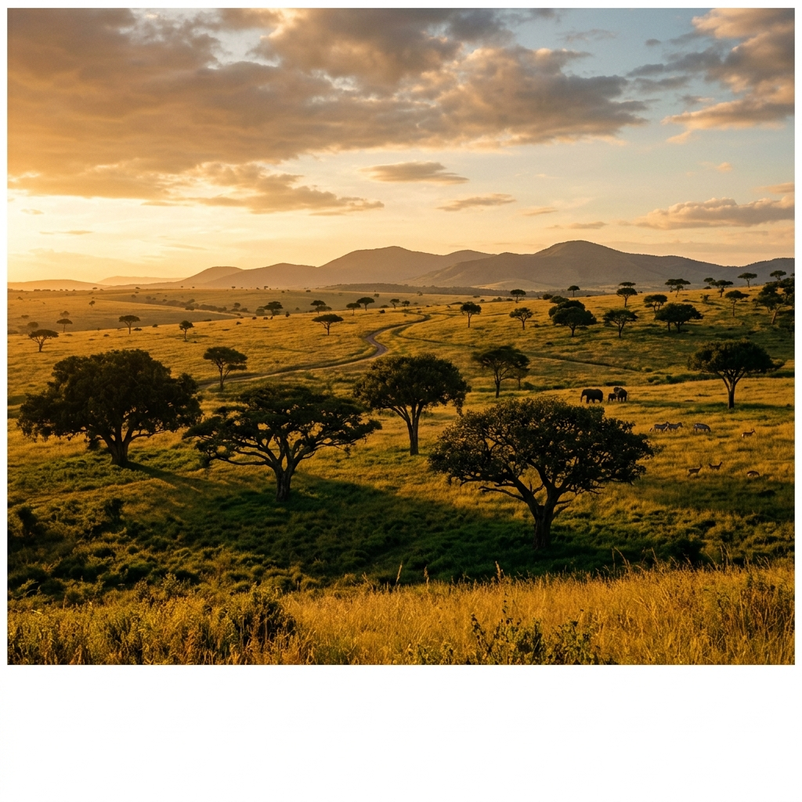
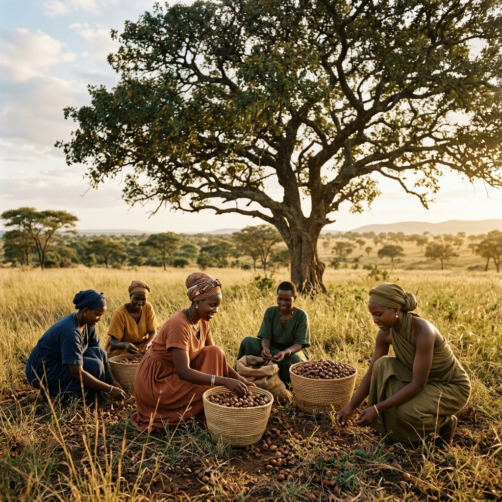
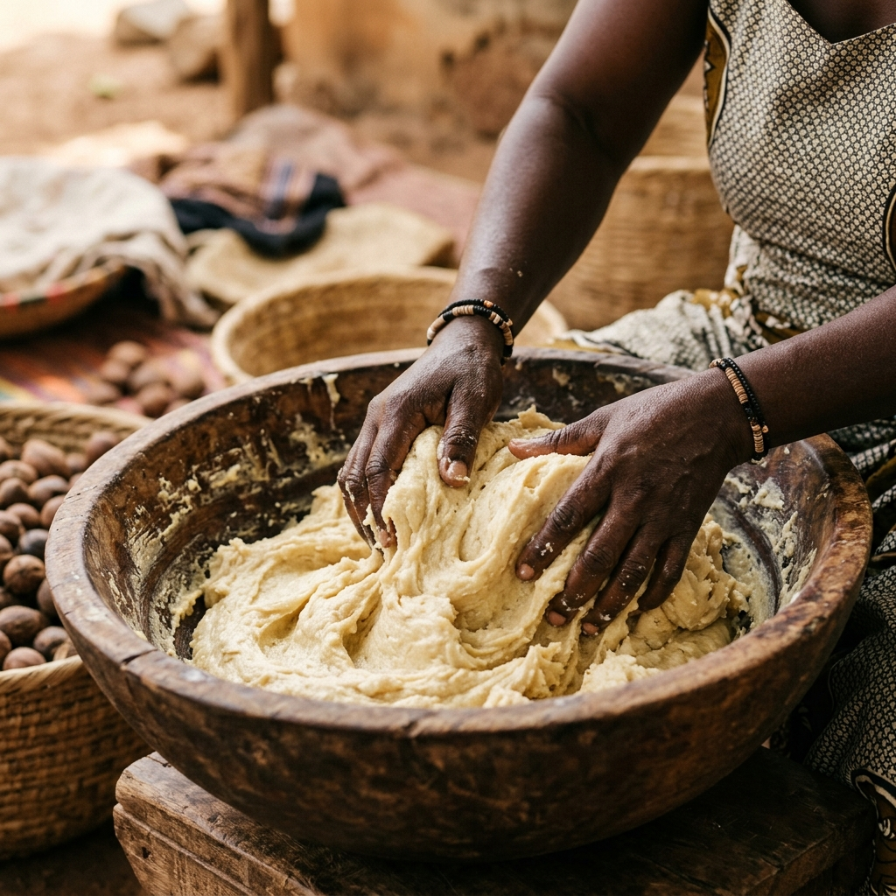

From Tree to Skin
The journey of every Zuri Nilotica product begins in the shea parklands of East Africa — where nature sets the standard and tradition sets the pace.

The Nilotica Tree
Vitellaria nilotica grows wild across the savannahs of Uganda, South Sudan, and northern Democratic Republic of Congo. Unlike its cultivated cousins, the Nilotica tree cannot be rushed — it takes fifteen to twenty years to bear fruit, and each tree produces for up to two centuries.
The fruit it yields contains a butter of exceptional quality: softer, creamier, and richer in oleic acid than West African shea varieties. It has been used for generations as a daily moisturiser, a healing balm, and a protective barrier against sun and wind.

Hand-Harvested. Sun-Dried. Cold-Pressed.
Every season, women in rural communities gather the fallen fruit of the Nilotica tree by hand. The nuts are sun-dried over several days, then cracked and cold-pressed to extract the raw butter — a process that has remained largely unchanged for centuries.
There is no industrial shortcut that improves upon this method. Our butter arrives as it was made — whole, unrefined, and alive with the full spectrum of its natural compounds.

Partnership, Not Extraction
Zuri Nilotica works directly with women-led harvesting cooperatives in East Africa. These partnerships are built on fair pricing, transparent terms, and a shared commitment to sustainable land stewardship.
We pay above market rates — not as charity, but as recognition of the skill, labour, and generational knowledge embedded in every kilogram of butter we receive.

Taking Less. Leaving More.
Shea trees are not plantation crops. They grow wild, in complex ecosystems shared with hundreds of other species. Our harvesting practices take only fallen fruit — never stripping trees or disturbing the surrounding landscape.
We use minimal, recyclable packaging. We ship in concentrated formats to reduce volume and weight. And we are committed to ensuring that every community we work with has the resources to protect and regenerate the land that sustains us all.